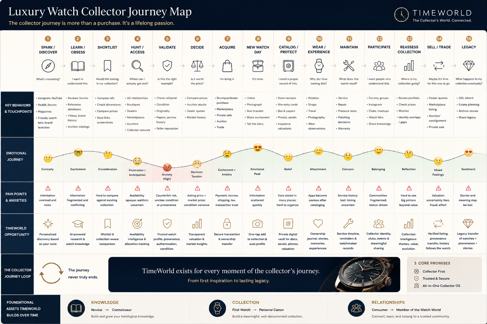

The brief: collectors are not just buyers
Watch collectors are a peculiar audience: their shopping journey is unique not only because of the multiple channels of purchase, but also the many touchpoints where they get their information. They collect stories — craftsmanship, history, the lineage of a movement. TimeWorld’s vision is to put the collector at the center of the horological world: news, direct connection with brands, and a community of people who care about the same things.
That framing creates a two-sided design problem. The product has to earn the trust of collectors and look credible enough that luxury maisons — the H. Moser & Cie and HYT tier — would put their brand inside it. Luxury brands do not lend their names to interfaces that feel cheap. The design was the pitch.
Strategy before screens
As the only UX on the team, I owned the thinking, not just the drawing — and the thinking started with the co-founder, not with Figma. Together we mapped the collector’s journey end to end — fifteen stages, from the first spark of discovery through validating, deciding, and the ritual of a new watch day, into the long life of ownership: cataloging, maintaining, participating in the community, reassessing the collection, and eventually selling, trading, or passing watches on as legacy. Under every stage we charted the behaviors and touchpoints, the emotional curve, the pain points, and the opportunity for TimeWorld. The map made one thing obvious: most products fight over the purchase moment, while the stages before and after it — where collectors spend years, because the journey never truly ends — were underserved. That’s where TimeWorld plays.

The Luxury Watch Collector Journey Map, built with the co-founder: fifteen stages, the emotional curve, pain points, and TimeWorld’s opportunity at every step. The loop at the bottom is the strategy in one line: the journey never truly ends.
With the journey agreed, I mapped the entire product as an information architecture before any UI existed — every section, flow, and decision point diagrammed and debated — so the team agreed on what the product was before arguing about how it looked. That structure page became the working contract between design and engineering: features were added, cut, and sequenced against it.
The discipline mattered because the product concept spans three jobs — content (news), connection (brands), and community (collectors) — and a solo-designed product that tries to do three things without a spine becomes three apps in a trench coat.
A design system from scratch — defining what luxury looks like
A luxury audience reads visual language the way collectors read a dial — so the visual direction couldn’t be borrowed from any toolkit. It had to be researched. I studied how the maisons present themselves — their sites, their print editorial, their watch photography — and built mood boards to define what TimeWorld should feel like before deciding what any screen should look like. The boards converged on a direction: material over decorative, editorial over app-like, restraint over noise. Metal, leather, and paper — not app-store brights.
The visual direction distilled from brand research and mood boards — then codified as the design system’s foundations.
Only once the direction held did it become a system: a typography scale from display to label tuned for editorial elegance, color styles with a dedicated luxury palette, and components — buttons, inputs, interaction states — defined once, documented in the file, and reused everywhere. Built from zero, because for this audience the visual language is the product’s credibility.
Made by hand, before AI
This was 2023 — before AI-assisted design workflows. Every flow, every component state, every piece of the system was drawn, specified, and documented manually. I include it in this portfolio partly for that reason: it’s the control group. The craft underneath my current AI-accelerated work was built here, the slow way.
Outcome

The shipped design language across the product: editorial articles, collector clubs, brand catalogs and retailers, wishlist, and events — content, connection, and community as one app.
- Live at timeworld.io.
- 18 luxury watch brands on board as partners — including H. Moser & Cie, Laurent Ferrier, Cuervo y Sobrinos, and HYT — validation that the design language passes the luxury bar.
- A documented, from-scratch design system that let a tiny team ship consistently without a design department.
What I learned
A design system is a strategy decision disguised as a deliverable. Build-from-scratch versus customize-a-toolkit isn’t a matter of ambition — it’s a matter of what the audience reads into every pixel. Collectors and maisons read craft; that’s worth building for. And working solo for a luxury client is the best craft training there is: nobody reviews your kerning, but everybody feels it.